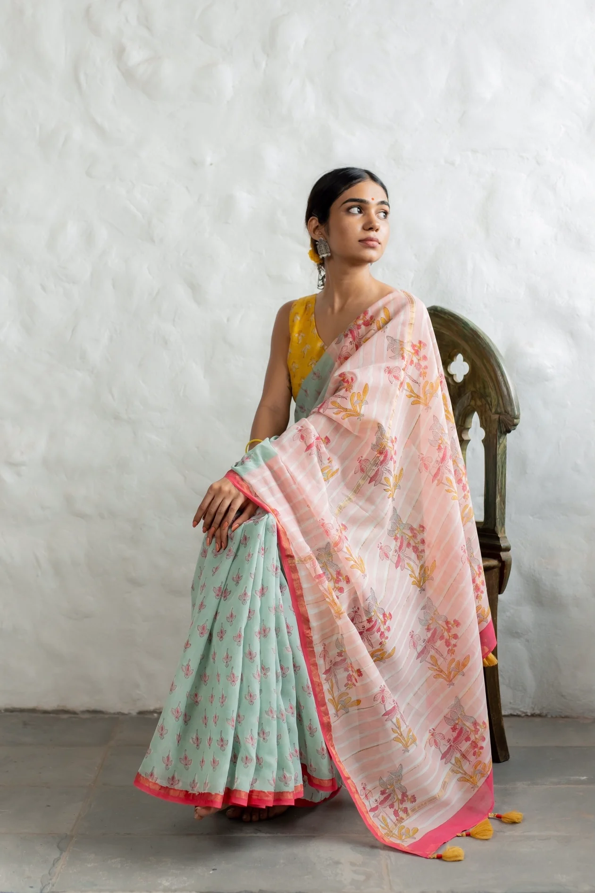
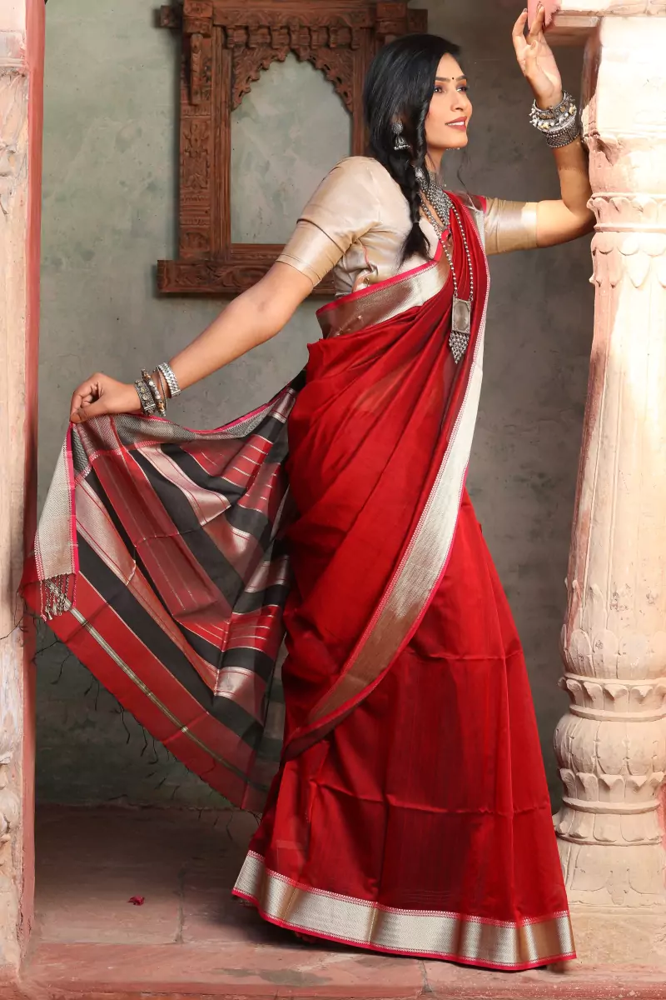

Traditional Attire
The traditional clothes of Madhya Pradesh are a reflection of its rich cultural diversity. Here are some of the most iconic garments.

Chanderi Sari:
The Chanderi sari is known for its light, airy fabric and intricate weaving patterns, making it a popular choice for special occasions.
